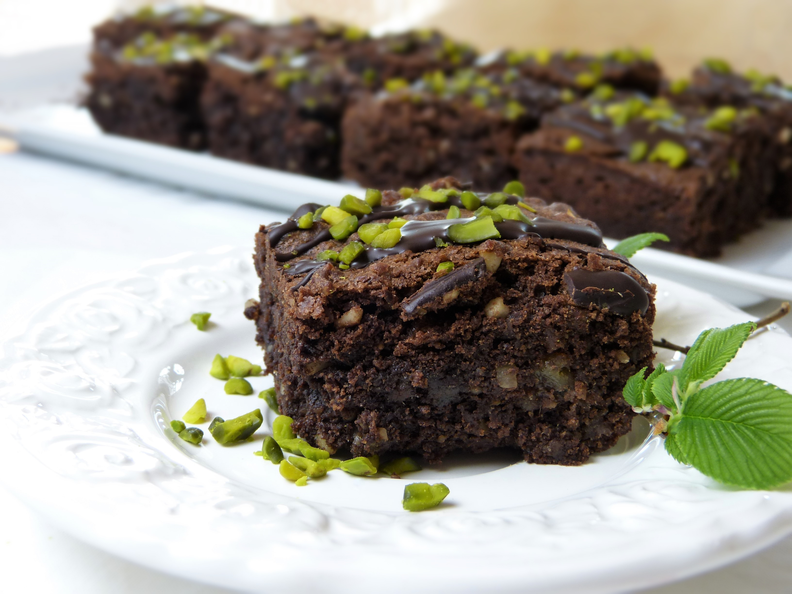

Home
Brownie

Description
These seriously fudgy homemade brownies are quite possibly the richest, most decadent brownies you’ll ever try. They’re thick, dense, and supremely chocolatey, thanks to a triple dose of chocolate: cocoa powder, melted chocolate, and chocolate chips. They’re basically one step away from pure fudge!
I originally published this recipe in 2016 and have since made a few important changes based on reader feedback. We reduced the sugar to make them less sweet, and now bake them in a 9-inch square pan instead of a 9×13, which yields thicker, richer brownies.If you Google “homemade brownies,” prepare to receive thousands of search results. (I don’t recommend doing this while hungry.) I threw my homemade frosted brownies recipe into the ring back in 2014—and I still love that one. Those brownies are chewy, dense, easy, and topped with chocolate frosting to boot.
Ingredients
- Butter: You can make brownies with butter, oil, or a combination of both, but in testing, we liked these brownies best with all butter. Unparalleled for flavor!
- Baking Chocolate: You need 4 ounces (1 standard bar) of either semi-sweet or bittersweet chocolate. Chop it up, and divide it in half. You’ll melt half with the butter, and then fold in the rest of the chopped chocolate along with the chocolate chips.
- Sugar: Sugar does much more than sweeten brownies. It liquifies as they bake, creating a softer center, and migrates to the top, creating that shiny, crackly surface characteristic of a good brownie.
- Eggs: Eggs are one of the main ingredients in brownies. Just as they do in flourless chocolate cake, eggs bind, add richness, and provide structure.
- Vanilla: Even the most chocolatey desserts benefit from pure vanilla!
- Cocoa Powder: Though natural cocoa powder can be used, I suggest a Dutch-process cocoa powder (I really like this brand) for a richer, smoother chocolate flavor. This brownie recipe does not rely on chemical leaveners; if a recipe does, that’s when it’s important to remember the difference between Dutch-process vs. natural cocoa powder.
- Flour: The cocoa powder takes the place of some flour, so you’ll only need 1 cup in these homemade brownies. The more flour in brownie batter, the cakier the brownies will taste. We want a dense and fudgy batch today, so use as little flour as possible.
- Salt: To balance all the flavors.
- Chocolate Chips: You may think these brownies have enough chocolate already that you could leave out the chocolate chips, but see below for why they’re key to brownie success!
Steps
- Preheat your oven to 175°C (350°F). Lightly grease your 8x8 inch pan and line it with parchment paper, leaving a slight overhang on the sides so you can easily lift the brownies out later
- In a large bowl, whisk the melted butter and sugar together vigorously for about 30 seconds. This helps dissolve the sugar, which is the key to getting that shiny, crinkly crust on top of your brownies.
- Add the eggs and vanilla extract to the bowl. Whisk vigorously for another minute until the mixture is slightly pale and well combined.
- Sift the cocoa powder into the bowl. Add the flour, salt, and chocolate chips. Switch to a rubber spatula and gently fold the mixture together until the dry flour streaks just disappear. Be careful not to overmix, or your brownies will become cakey instead of fudgy.
- Pour the thick batter into your prepared pan and use the spatula to smooth out the top. Bake for 35 to 40 minutes.
- Check doneness by inserting a toothpick into the center; it should come out with a few moist crumbs attached, but not wet batter. Let the brownies cool completely in the pan before slicing them into squares.